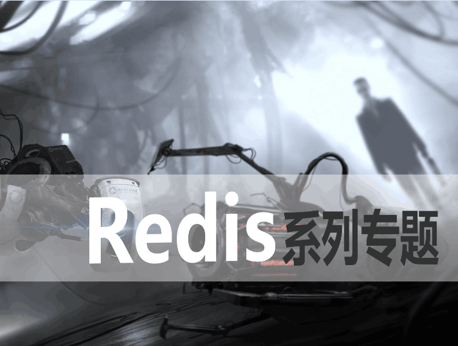
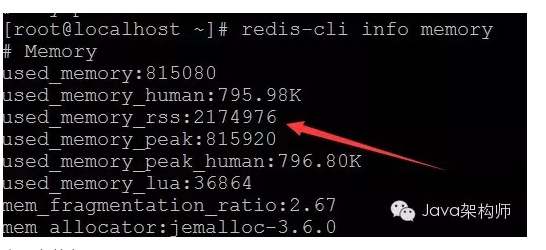
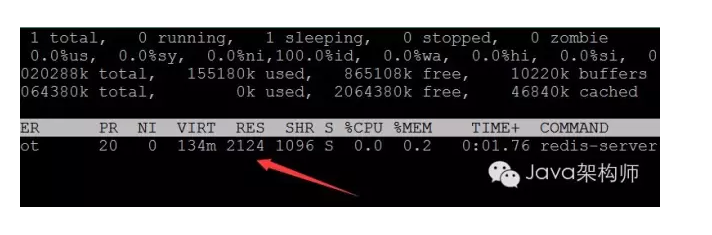
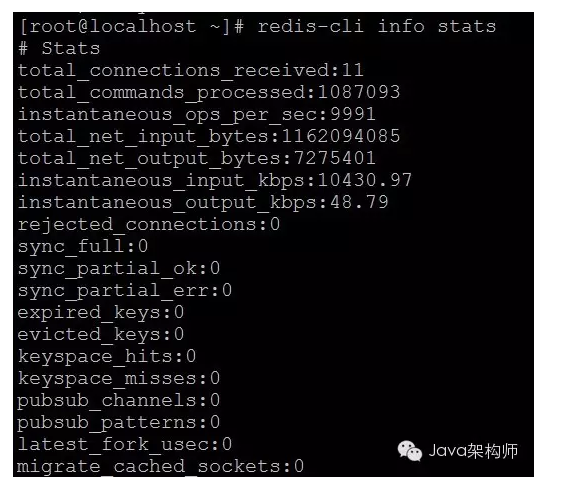
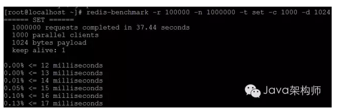
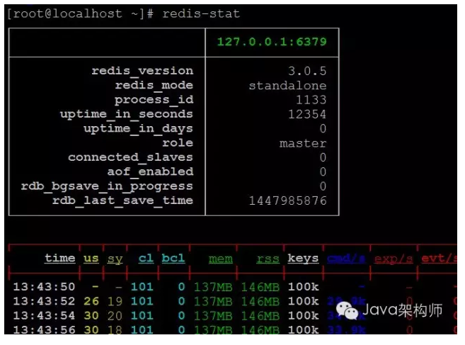
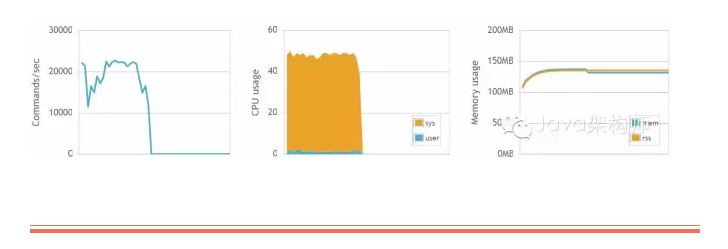

作者的热门手记
9592浏览 71推荐 24评论
5352浏览 58推荐 14评论
3209浏览 58推荐 7评论
2105浏览 21推荐 44评论
28137浏览 52推荐 11评论
作者： 常明，Java架构师
[请尊重原创，盗版必究，转载请指明出处]

Redis之所以备受追捧，在于其运行速度快、高性能、高并发，这正是大规模互联网应用所需要的能力。
Redis的高性能表现，除了由于其完全基于内存进行数据操作，另一方面也在于作者超强的架构能力，代码极其简洁短小精悍，尽量减少不必要的依赖，运行效率非常高。
在运行环境中，我们需要时刻关注Redis性能，检查其运行状态是否良好。常用技术手段如下：
1.redis-cli info memory 命令
查看redis内存使用情况

主要参数有：
used_memory: redis当前数据使用的内存，有可能包括SWAP虚拟内存。
used_memory_rss: redis当前占用的物理内存，包括内存碎片。此值和用top命令查看的进程占用内存一致。

mem_fragmentation_ratio：used_memory_rss/used_memory , 此值很重要，当mem_fragmentation_ratio <1 时，说明used_memory > used_memory_rss，这时Redis已经在使用SWAP，运行性能会受很大影响。通常在正常情况下，该值比1大一些。
如何避免mem_fragmentation_ratio <1？我们需要在redis.conf文件中正确配置Redis内存管理的三个参数：maxmemory、maxmemory-policy、maxmemory-samples。
maxmemory：默认为0，被注释掉。在这种情况下，Redis会尽可能地使用物理内容，用完后尽可能使用虚拟内存SWAP。当使用SWAP时，性能会急剧下降，极限情况下，Redis服务撑不住了，就会宕掉。这是运行环境下Redis服务宕掉的主要原因。
因此，在运行环境，一定要给该参数设置一个合理值。实际使用时，会根据机器物理内存情况，设置一个阈值，如物理内存的70%等。
当内存使用耗尽达到阈值时，Redis会使用清除策略腾出内存，如清除策略失效，就直接返回写异常。这里就涉及到第二个参数，maxmemory-policy清除策略的定义。
maxmemory-policy：清除策略的定义，共有6种策略：
1）volatile-lru 对设置了时间期限的键值集合采用LRU近期最少使用算法。
2）allkeys-lru 对所有键值,采用LRU算法。
3）volatile-random 对设置了时间期限的键值集合采取随机选取策略。
4）allkeys-random 对所有键值采取随机选取策略。
5）volatile-ttl 对设置了时间期限的键值采用TTL算法，快过期的先删除。
6）noeviction 不删除，直接返回写异常。
当然，为了提高效率，Redis的LRU和TTL算法，并不是严格意义的精确算法，而是采用一种近似算法，这是在效率和精确性方面所做的权衡。
这就涉及到第三个参数，maxmemory-samples。Redis会设置一个采样值，在采样值范围内，使用LRU和TTL。maxmemory-samples就是采样值的定义，缺省是5，作者的建议，已是最佳。
2.redis-cli info stats 命令
查看redis统计信息

此命令可以列出一些Redis运行关键数据指标。其中instantaneous_ops_per_sec: 每秒操作数，该值很重要，查看当前并发压力状态。
3.Redis基准测试工具
Redis本身提供了基准测试命令redis-benchmark，使用redis-benchmark可以进行压力测试，了解当前Redis环境下的性能表现。
redis-benchmark命令自身的帮助很详细，这里列举几个常用参数：
-h <hostname> 主机名 (缺省 127.0.0.1)
-p <port> 端口号 (缺省 6379)
-a <password> 登录口令(如Redis设置，缺省无)
-c <clients> 并发连接数 (缺省 50)
-n <requests> 总请求数 (缺省 100000)
-d <size> SET/GET操作数据值字节大小(缺省 2)
-r <keyspacelen> SET/GET/INCR操作键值以及SADD操作数据值的随机选择范围。
-t <tests> 测试的操作集，用逗号分隔，缺省都执行
下面这条命令就是1000个客户端并发，进行set操作请求，key值是16位固定长度，其低位在0-100000之间随机选择，value的大小是1024个字节，在37.44秒内完成了1000000次请求。

4.redis-cli monitor 命令
实时监视redis操作情况
该命令实时监视Redis被访问详情，包括来源、时间、操作命令等，注意该命令对Redis实时性能会造成一些影响。
5.redis-stat 第三方统计分析工具
redis-stat不是Redis老版本提供的redis-stat命令。该工具采用ruby开发，利用redis-cli info 提供的原始数据，给用户提供基于文本列表或web图表方式展现的各种关键数据。
redis-stat 开源网址: https://github.com/junegunn/redis-stat
安装步骤如下：
1) yum install ruby ruby-devel rubygems 安装ruby环境
2) yum install gcc-c++ 安装依赖包
3) gem install redis-stat
4) gem uninstall daemons 卸载daemons-1.2.3版本(如有)，只保留redis-stat安装的1.1.9版本
5) redis-stat 命令启动，可携带设置参数，具体可查看网站帮助。下面是缺省启动情况：

如启动提示 Faraday: you may want to install system_timer for reliable timeouts安装SystemTimer
gem install SystemTimer
redis-stat也可以web应用模式启动，这样就可在浏览器中以图表方式直观查看。
redis-stat --server=8080 --daemon 表示8080端口后台启动服务。浏览器访问页面部分截图如下：
